Capítulo 3 Análisis Exploratorio de Datos (EDA)
En este capítulo analizamos las variables cuantitativas del dataset de Concrete Compressive Strength (Resistencia del Concreto).
3.1 Dataset y ficha tecnica
Fuente: UCI Machine Learning Repository (Donado por el Prof. I-Cheng Yeh, 2007).
Área: Ingeniería Civil / Ciencia de Materiales.
Número de Observaciones (N): 1,030 mezclas experimentales.
Número de Variables: 9 variables cuantitativas (8 independientes + 1 dependiente).
Valores Faltantes: Ninguno.
3.4 Diccionario de Variables
Aclaramos que cada observacion representa un ensayo de laboratorio con una receta individual con ingredientes mezclados para hacer un metro cubico de cemento, el tiempo que se dejo reposar y la fuerza que resistio.
Todas las variables son cuantitativas continuas:
| Variable | Nombre en Dataset | Tipo | Unidad | Descripción |
|---|---|---|---|---|
| 1. Cemento | Cement |
Entrada (Indep.) | \(\text{kg/m}^3\) | Componente aglutinante principal. |
| 2. Escoria de alto horno | Blast_Furnace_Slag |
Entrada (Indep.) | \(\text{kg/m}^3\) | Subproducto siderúrgico que mejora durabilidad. |
| 3. Ceniza volante | Fly_Ash |
Entrada (Indep.) | \(\text{kg/m}^3\) | Subproducto de centrales térmicas. |
| 4. Agua | Water |
Entrada (Indep.) | \(\text{kg/m}^3\) | Cantidad de agua. |
| 5. Superplastificante | Superplasticizer |
Entrada (Indep.) | \(\text{kg/m}^3\) | Aditivo químico que reduce necesidad de agua. |
| 6. Agregado Grueso | Coarse_Aggregate |
Entrada (Indep.) | \(\text{kg/m}^3\) | Grava / Piedra chancada. |
| 7. Agregado Fino | Fine_Aggregate |
Entrada (Indep.) | \(\text{kg/m}^3\) | Arena. |
| 8. Edad | Age |
Entrada (Indep.) | Días (\(1 \text{ a } 365\)) | Tiempo de maduración/curado del concreto. |
| 9. Resistencia | Concrete_Compressive_Strength |
Salida (Dependiente) | \(\text{MPa}\) | Resistencia final a la compresión. |
3.5 Exploración del data set.
Resumimos los nombres de las variables
df_clean <- df %>%
rename(
cemento = `Cement (component 1)(kg in a m^3 mixture)`,
escoria = `Blast Furnace Slag (component 2)(kg in a m^3 mixture)`,
ceniza = `Fly Ash (component 3)(kg in a m^3 mixture)`,
agua = `Water (component 4)(kg in a m^3 mixture)`,
superplast = `Superplasticizer (component 5)(kg in a m^3 mixture)`,
agregado_grueso = `Coarse Aggregate (component 6)(kg in a m^3 mixture)`,
agregado_fino = `Fine Aggregate (component 7)(kg in a m^3 mixture)`,
edad = `Age (day)`,
resistencia = `Concrete compressive strength(MPa, megapascals)`
)3.5.1 Exploración de la variable de respuesta
df_clean %>% summarise(
n = length(resistencia),
media = mean(resistencia),
sd = sd(resistencia),
mediana = median(resistencia),
RIC = IQR(resistencia),
Q1 = quantile(resistencia, 0.25),
Q3 = quantile(resistencia, 0.75),
minimo = min(resistencia),
maximo = max(resistencia),
asim = skewness(resistencia),
curtosis = kurtosis(resistencia)
)## # A tibble: 1 × 11
## n media sd mediana RIC Q1 Q3 minimo maximo asim curtosis
## <int> <dbl> <dbl> <dbl> <dbl> <dbl> <dbl> <dbl> <dbl> <dbl> <dbl>
## 1 1030 35.8 16.7 34.4 22.4 23.7 46.1 2.33 82.6 0.416 2.68Vemos que las 1030 observaciones de mezclas de concreto, tienen una resistencia de comprension de 35.817 MPa, con una desviación estándar de 16.70 MPa. Además, el 50% de las mezclas tienen una resistencia igual o menor a 34.442 MPa. Además, se observa una mezcla de concreto experimental con resistencia de 85.59 MPa siendo esta la observación con mayor Resistencia final a la compresión y otras con la minima resistencia entre las observaciones con 2.33 MPa.
options(scipen = 999)
df_clean |>
ggplot(aes(x = resistencia)) +
geom_histogram(
aes(y = after_stat(density)),
binwidth = 2,
fill = "darkblue",
color = "white",
alpha = 0.6
) +
geom_density(color = "darkblue", linewidth = 1.2) +
labs(
title = "Distribución de la resistencia del concreto",
x = "Resistencia",
y = "Densidad"
) +
theme_bw()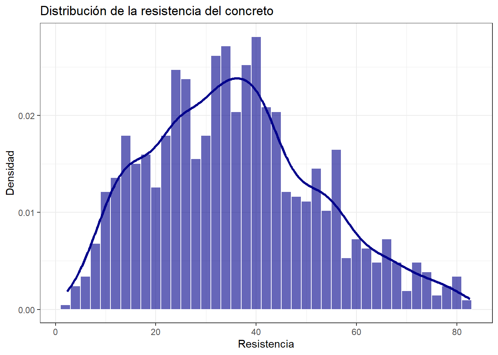
la resistencia muestra una distribución con forma parecida a una simétrica con forma de campana, centrada en torno a los \(35\text{ MPa}\) y abarcando un rango desde los \(2.3\) hasta los \(82.6\text{ MPa}\). La curva de densidad sugiere un comportamiento cercano a la distribución normal, reflejando una muestra equilibrada que abarca desde concretos convencionales hasta mezclas de alto rendimiento.3.6 Exploracion de las varibles independientes
Creamos la siguiente tabla para observar de forma descriptiva las variables independientes que analizaremos y asi complementar el analisis de los boxplots con ella.
tabla_independientes <- df_clean |>
select(cemento, ceniza, agua, edad) |>
pivot_longer(
cols = everything(),
names_to = "variables",
values_to = "valor"
) |>
group_by(variables) |>
summarise(
n = length(valor),
media = round(mean(valor), 3),
sd = round(sd(valor), 3),
mediana = round(median(valor), 3),
RIC = round(IQR(valor), 3),
Q1 = round(quantile(valor, 0.25), 3),
Q3 = round(quantile(valor, 0.75), 3),
minimo = round(min(valor), 3),
maximo = round(max(valor), 3),
asim = round(skewness(valor), 3),
curtosis = round(kurtosis(valor), 3)
)
tabla_independientes## # A tibble: 4 × 12
## variables n media sd mediana RIC Q1 Q3 minimo maximo asim
## <chr> <int> <dbl> <dbl> <dbl> <dbl> <dbl> <dbl> <dbl> <dbl> <dbl>
## 1 agua 1030 182. 21.4 185 27.1 165. 192 122. 247 0.074
## 2 cemento 1030 281. 105. 273. 158. 192. 350 102 540 0.509
## 3 ceniza 1030 54.2 64.0 0 118. 0 118. 0 200. 0.537
## 4 edad 1030 45.7 63.2 28 49 7 56 1 365 3.26
## # ℹ 1 more variable: curtosis <dbl>3.6.1 Distribución del Contenido de Cemento
df_clean |>
ggplot(aes(x = cemento)) +
geom_histogram(
aes(y = after_stat(density)),
binwidth = 25,
fill = "#1b9e77", # Tono verde esmeralda
color = "white",
alpha = 0.6
) +
geom_density(color = "#1b9e77", linewidth = 1.2) +
labs(
title = "Distribución del Contenido de Cemento",
x = "Cemento (kg/m³)",
y = "Densidad"
) +
theme_bw()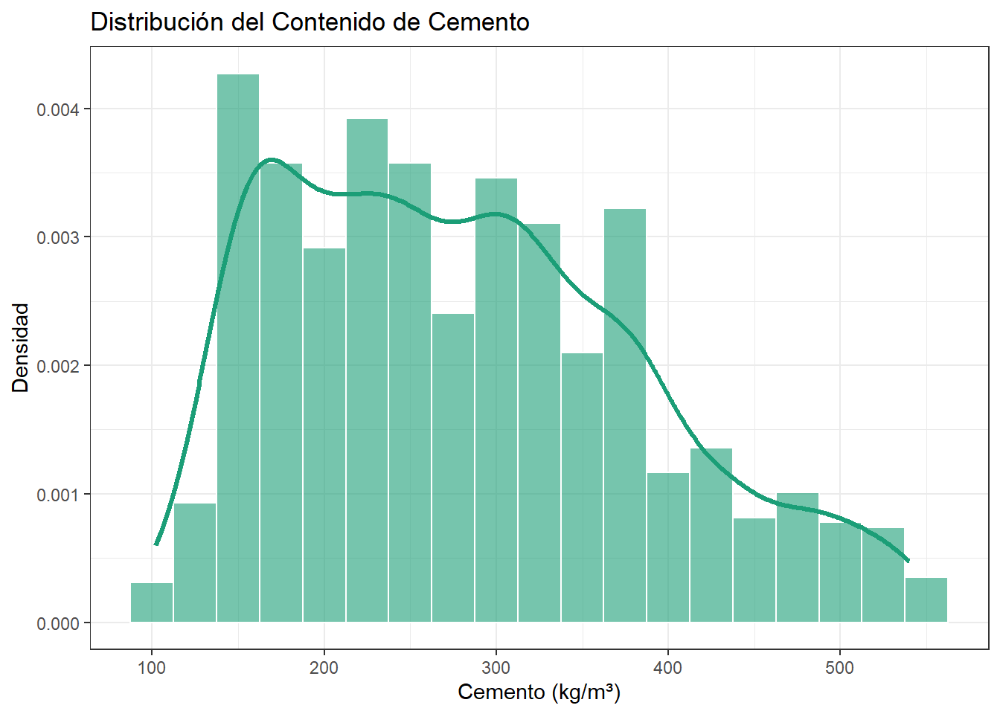
La dosificación de cemento presenta una distribución continua y multimodal suave, abarcando desde un mínimo de \(102\text{ kg/m}^3\) hasta un máximo de \(540\text{ kg/m}^3\), con una media muestral de \(281.17\text{ kg/m}^3\) y una desviación estándar de \(104.51\text{ kg/m}^3\). Exhibe un coeficiente de asimetría leve a moderado (\(0.51\)) y una curtosis de \(2.48\) (platicúrtica), lo que evidencia un diseño experimental con amplia cobertura y suficiente variabilidad para evaluar mezclas con diversas proporciones aglutinantes.3.6.2 Distribución del Contenido de Ceniza Volante (Fly Ash)
df_clean |>
ggplot(aes(x = ceniza)) +
geom_histogram(
aes(y = after_stat(density)),
binwidth = 10, # Intervalos de 10 kg/m^3
fill = "#d95f02", # Tono naranja / teja
color = "white",
alpha = 0.6
) +
geom_density(color = "#d95f02", linewidth = 1.2) +
labs(
title = "Distribución del contenido de Ceniza Volante",
x = "Ceniza Volante (kg/m³)",
y = "Densidad"
) +
theme_bw() La distribución es fuertemente bimodal e inflada en ceros. Presenta una concentración masiva en los \(0\text{ kg/m}^3\) correspondiente a las mezclas tradicionales de control (\(55\%\) de la muestra), seguida de un segundo agrupamiento entre los \(80\) y \(160\text{ kg/m}^3\) en aquellas formulaciones donde sí se sustituyó cemento por ceniza. Esta notable asimetría y falta de continuidad confirma la no normalidad de la variable.
La distribución es fuertemente bimodal e inflada en ceros. Presenta una concentración masiva en los \(0\text{ kg/m}^3\) correspondiente a las mezclas tradicionales de control (\(55\%\) de la muestra), seguida de un segundo agrupamiento entre los \(80\) y \(160\text{ kg/m}^3\) en aquellas formulaciones donde sí se sustituyó cemento por ceniza. Esta notable asimetría y falta de continuidad confirma la no normalidad de la variable.
3.6.3 Distribución del Contenido de Agua
df_clean |>
ggplot(aes(x = agua)) +
geom_histogram(
aes(y = after_stat(density)),
binwidth = 8,
fill = "#2b83ba", # Tono azul océano
color = "white",
alpha = 0.6
) +
geom_density(color = "#2b83ba", linewidth = 1.2) +
labs(
title = "Distribución del Contenido de Agua",
x = "Agua (kg/m³)",
y = "Densidad"
) +
theme_bw()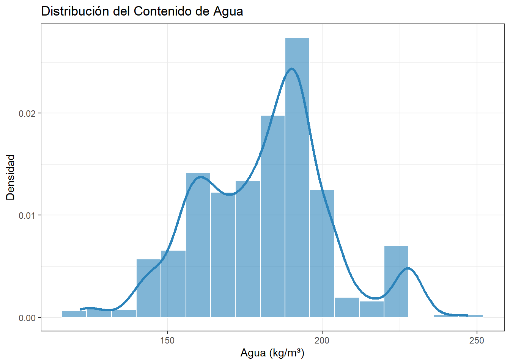
La cantidad de agua presenta una distribución marcadamente simétrica y acampanada, con un promedio de \(181.57\text{ kg/m}^3\) y una dispersión acotada (\(\text{DE} = 21.36\text{ kg/m}^3\)). Su coeficiente de asimetría es prácticamente nulo (\(0.07\)) y su curtosis (\(3.12\)) es sumamente próxima a la de una distribución normal teórica. La gran mayoría de los ensayos se sitúan entre los \(160\) y \(200\text{ kg/m}^3\), rango estándar que asegura la trabajabilidad y fluidez requerida en mezclas de concreto.3.6.4 Distribución del Tiempo de Curado (Edad)
df_clean |>
ggplot(aes(x = edad)) +
geom_histogram(
aes(y = after_stat(density)),
binwidth = 14, # Intervalos de 14 días (2 semanas)
fill = "#7570b3", # Tono violeta
color = "white",
alpha = 0.6
) +
geom_density(color = "#7570b3", linewidth = 1.2) +
labs(
title = "Distribución del Tiempo de Curado",
x = "Tiempo de Curado (Días)",
y = "Densidad"
) +
theme_bw()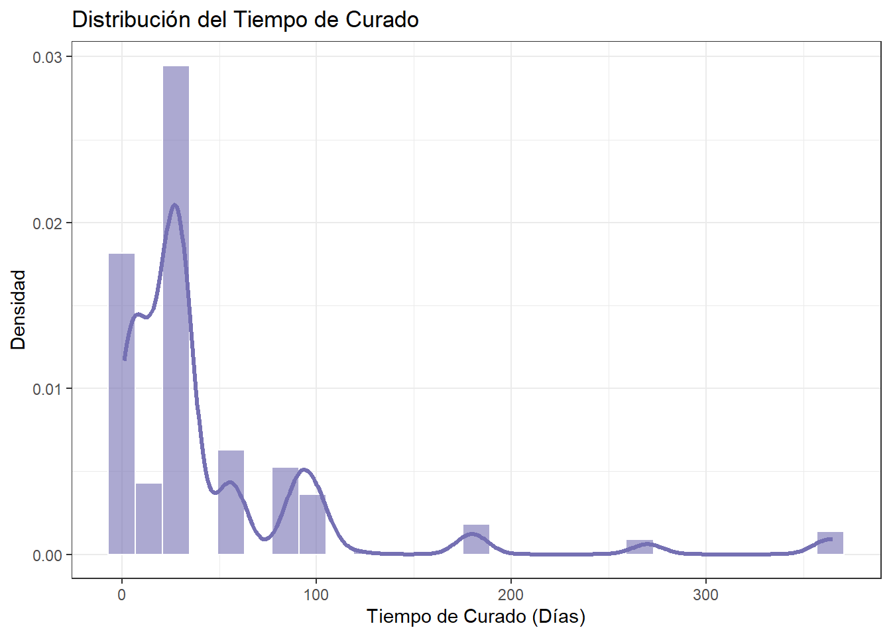
La distribución exhibe un marcado sesgo positivo con picos, concentrando la gran mayoría de las observaciones en los \(28\text{ días}\) la cual es la edad estándar de diseño y en periodos tempranos (\(\le 7\text{ días}\)). La densidad decae drásticamente a partir de los \(56\text{ días}\), extendiéndose en una cola larga hasta los \(365\text{ días}\), lo cual evidencia una distribución no normal explicada por el diseño experimental enfocado en etapas normativas de obra.3.7 Análisis univariado: Diagramas de caja (Boxplots)
# 1. Boxplot de Ceniza Volante
p1 <- df %>%
ggplot(aes(x = "", y = `Fly Ash (component 3)(kg in a m^3 mixture)`)) +
geom_boxplot(fill = "skyblue", alpha = 0.7) +
labs(
title = "Ceniza Volante (Fly Ash)",
y = "Ceniza Volante (kg/m³)",
x = ""
) +
theme_bw()
# 2. Boxplot de Edad de Curado
p2 <- df %>%
ggplot(aes(x = "", y = `Age (day)`)) +
geom_boxplot(fill = "skyblue", alpha = 0.7) +
labs(
title = "Tiempo de Curado",
y = "Edad (Días)",
x = ""
) +
theme_bw()
# Boxplot de Cemento
p3 <- df %>%
ggplot(aes(x = "", y = `Cement (component 1)(kg in a m^3 mixture)`)) +
geom_boxplot(fill = "skyblue", alpha = 0.7) +
labs(
title = "Cemento",
y = "Cemento kg/m^3",
x = ""
) +
theme_bw()
# 3. Boxplot de Resistencia a la Compresión -> variable de respuest.
p4 <- df %>%
ggplot(aes(x = "", y = `Concrete compressive strength(MPa, megapascals)`)) +
geom_boxplot(fill = "skyblue", alpha = 0.7) +
labs(
title = "Resistencia a la Compresión",
y = "Resistencia (MPa)",
x = ""
) +
theme_bw()
# Boxplot de agua
p5 <- df %>%
ggplot(aes(x = "", y = `Water (component 4)(kg in a m^3 mixture)`)) +
geom_boxplot(fill = "skyblue", alpha = 0.7) +
labs(
title = "Agua",
y = "Agua Kg/m^3",
x = ""
) +
theme_bw()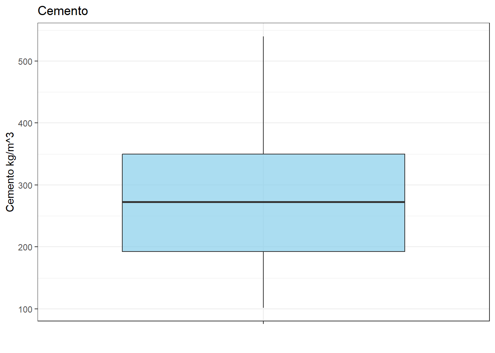
Para la variable independiente “Cemento”, se observa un comportamiento homogéneo y balanceado, sin valores atipicos, con un promedio de cemento en la mezcla de \(281\text{ }kg/m^3\) y una desviación estándar de \(104.507\text{ }kg/m^3\).El diagrama de cjas y bigotes nos indica que el 50% de las observaciones de mezclas de concreto tienen un cantidad de cemento menor o igual a \(272.9\text{ }kg/m^3\), mostrando una cercanía con el promedio. En cuanto al rango intercuartílico, el \(25\%\) de las mezclas con menor cantidad de cemento añadido registran valores iguales o inferiores a \(192.3\text{ }kg/m^3\), mientras que el \(75\%\) de las muestras se sitúan por debajo de los \(350\text{ }kg/m^3\). Los bigotes abarcan un rango que va desde un mínimo de \(102\text{ }kg/m^3\) hasta un maximo de cemento añadido de \(540\text{ }kg/m^3\).
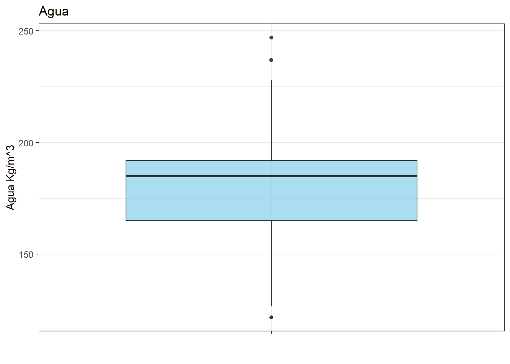
Para la variable agua, se observa un comportamiento homogéneo y balanceado, con un promedio de agua en la mezcla de \(181.5\text{ }kg/m^3\) y una desviación estándar de \(21.3\text{ }kg/m^3\).El 50% de las observaciones tienen la cantidad de agua añadida menor o igual a \(185\text{ }kg/m^3\), mostrando una notable cercanía con el promedio de agua añadida a las mezclas de concreto (\(181.5\text{ }kg/m^3\)). En cuanto al rango intercuartílico, el \(25\%\) de las mezclas con menor cantidad de agua registran valores iguales o inferiores a \(164.9.37\text{ }kg/m^3\), mientras que el \(75\%\) de las muestras se sitúan por debajo de los \(192\text{ }kg/m^3\). Los bigotes abarcan un rango que va desde un mínimo de \(121.74\text{ }kg/m^3\) (concreto con mucha agua añadida, aumentando asi la sequedad de este) hasta aproximadamente los \(228\text{ }kg/m^3\). Se aprecian únicamente unos pocos valores atípicos superiores que alcanzan un máximo de \(247\text{ }kg/m^3\).
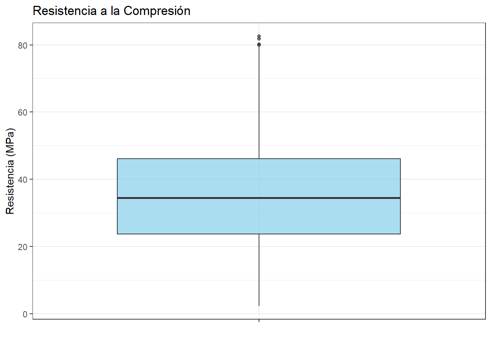
### Analisis boxplot Fly AshSe observa una distribución atipica con alta dispersión de los datos, además por la tabla anterior la media del uso de ceniza en las mezclas es \(54.2 kg/m^3\) y una desviación estándar de \(64 kg/m^3\)
Sin embargo el diagrama de caja muestra que el 50% de los valores de ceniza coincide con el limite inferior, esto indica que el 50% de las mezclas no contienen contienen ceniza volante. Por otra parte, el 75% de las observaciones contienen una cantidad de ceniza menor o igual a \(118.6 kg/m^3\), mientras que el migote señala mezclas con un maximo de \(201.1 kg/m^3\), no se evidencia ningun valor atipico.
¿porque hay este comportamiento de los datos centrado en cero? esto se debe a que el conjunto de datos contiene mezclas de control convencionales elaboradas exclusivamente con cemento tradicional para servir de base comparativa. Por ende, la ceniza volante actúa como un componente opcional.
3.7.1 Analisis boxplot tiempo de curado

La variable \(\text{Age}\) (días de curado) presenta una concentración en edades tempranas y unagran dispersión, reflejada en un tiempo promedio de curado de \(45.7\text{ días}\) y una desviación estándar de \(63.2\text{ días}\).
El boxplot nos permite observar una distribución sesgada a la derecha, tambien el \(50\%\) de las muestras fueron ensayadas a los \(28\text{ días}\) o menos, el \(25\%\) inferior corresponde a edades tempranas iguales o menores a \(7\text{ días}\), y el \(75\%\) central se concentra por debajo de los \(56\text{ días}\). No obstante, el diagrama de caja evidencia una serie de valores extremos en la parte superior, con esayos a los \(90\), \(180\), \(270\) y hasta un máximo de \(365\text{ días}\) es decir un año completo de curado.
¿Por qué existen valores atípicos tan elevados?
En la práctica de la ingeniería civil, los ensayos estándar de control de calidad se realizan de forma rutinaria a los \(7\), \(14\) y principalmente a los \(28\text{ días}\). Los tiempos de curado prolongados (\(> 90\text{ días}\)) son ensayos de investigación concebidos para evaluar la durabilidad a largo plazo y la reacción tardía de adiciones minerales como la ceniza volante.

Para la variable de respuesta “resistencia”, se observa un comportamiento mucho más homogéneo y balanceado, con un promedio de resistencia de \(35.8\text{ MPa}\) y una desviación estándar de \(16.7\text{ MPa}\).
El 50% de los datos tienen una resistencia menor o igual a \(34.5\text{ MPa}\), mostrando una notable cercanía con el promedio de resistencia de las mezclas de concreto (\(35.8\text{ MPa}\)). En cuanto al rango intercuartílico, el \(25\%\) de las mezclas con menor resistencia registran valores iguales o inferiores a \(23.7\text{ MPa}\), mientras que el \(75\%\) de las muestras se sitúan por debajo de los \(46.1\text{ MPa}\). Los bigotes abarcan un rango que va desde un mínimo de \(2.3\text{ MPa}\) (concreto de muy baja resistencia) hasta aproximadamente los \(80.0\text{ MPa}\). Se aprecian únicamente unos pocos valores atípicos superiores que alcanzan un máximo de \(82.6\text{ MPa}\).
3.8 Análisis bivariado: relación con la resistencia del concreto
df_clean %>%
ggplot(aes(x = cemento, y = resistencia)) +
geom_point() +
labs(
title = "Dispersión entre el cemento y la resistencia del concreto",
x = "Cemento (kg/m³)",
y = "Resistencia (MPa)"
) +
theme_bw()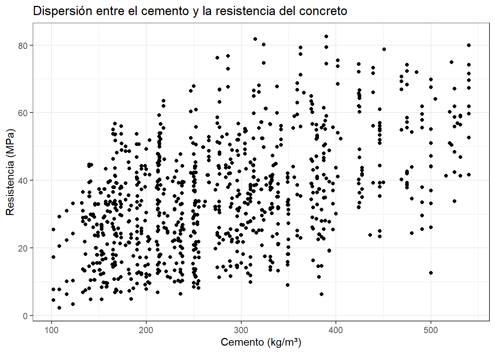
Existe una correlación positiva moderada-fuerte entre la cantidad de cemento y la resistencia del concreto. El diagrama de dispersión muestra que, en general, a medida que aumenta el cemento, también aumenta la resistencia. Por lo tanto, el cemento presenta una relación lineal importante con la variable respuesta.
df_clean %>%
ggplot(aes(x = agua, y = resistencia)) +
geom_point() +
labs(
title = "Dispersión entre el agua y la resistencia del concreto",
x = "Agua (kg/m³)",
y = "Resistencia (MPa)"
) +
theme_bw()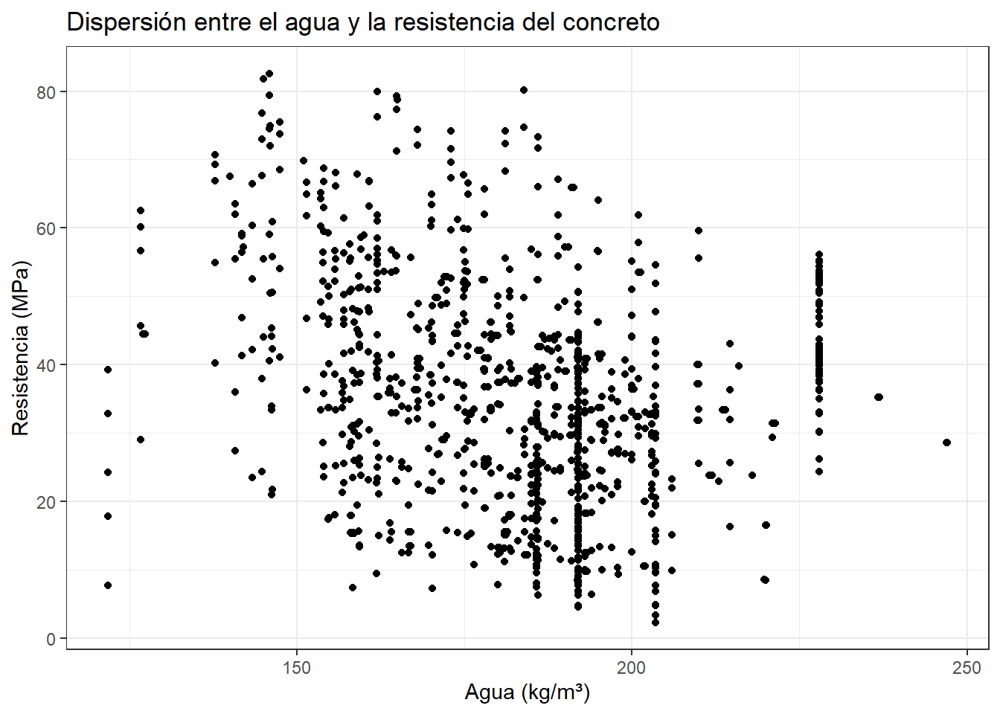
La cantidad de agua presenta una correlación negativa débil-moderada con la resistencia del concreto. El diagrama de dispersión muestra una tendencia en la que a mayor cantidad de agua en la mezcla, la resistencia tiende a disminuir. Por lo tanto, el agua parece tener una relación inversa con la resistencia del concreto.
df_clean %>%
ggplot(aes(x = edad, y = resistencia)) +
geom_point() +
labs(
title = "Dispersión entre el tiempo de curado y la resistencia del concreto",
x = "Tiempo de curado (Días)",
y = "Resistencia (MPa)"
) +
theme_bw()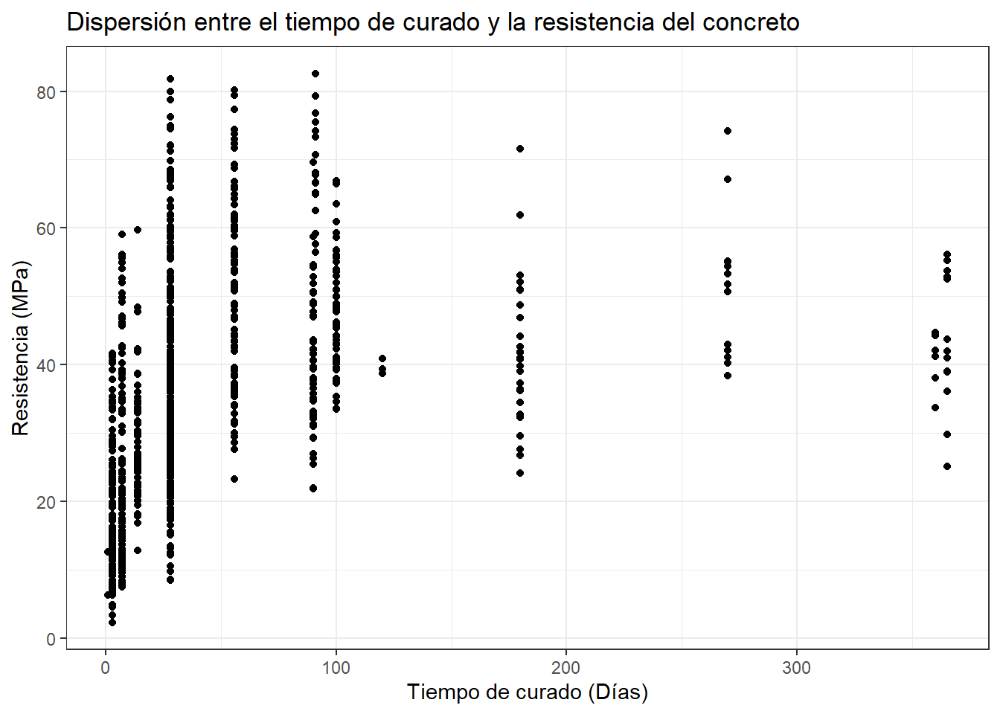
La edad (tiempo de curado) presenta una correlación positiva con la resistencia del concreto. El diagrama de dispersión muestra que la resistencia aumenta rápidamente en los primeros días y luego el incremento se vuelve más lento a medida que pasa el tiempo. Por lo tanto, existe una relación notable entre ambas variables, aunque no es puramente lineal.
df_clean %>%
ggplot(aes(x = ceniza, y = resistencia)) +
geom_point() +
labs(
title = "Dispersión entre la ceniza volante y la resistencia del concreto",
x = "Ceniza volante (kg/m³)",
y = "Resistencia (MPa)"
) +
theme_bw()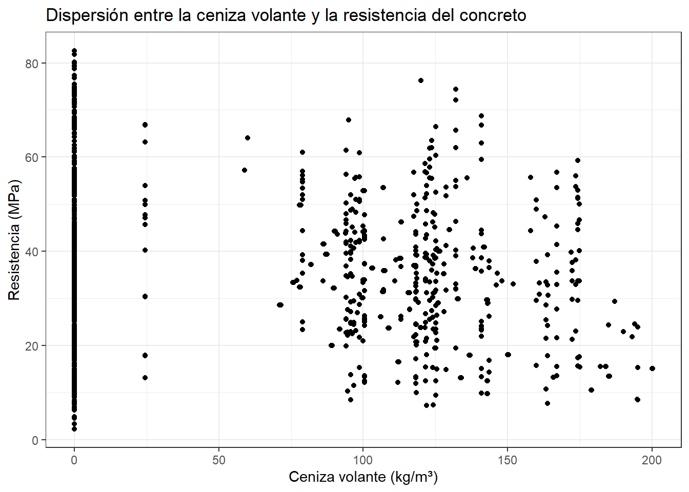
La ceniza volante y la resistencia del concreto presentan una correlación lineal prácticamente nula. El diagrama de dispersión muestra una gran concentración de datos en cero y una amplia dispersión en las mezclas con ceniza, sin mostrar una tendencia lineal definida. Por lo tanto, la ceniza volante no parece tener una relación lineal directa con la resistencia del concreto.
3.9 Análisis multivariado
La matriz de correlación y dispersión permite evaluar de manera simultánea las interacciones entre los componentes de la mezcla, la edad de curado y la resistencia final.
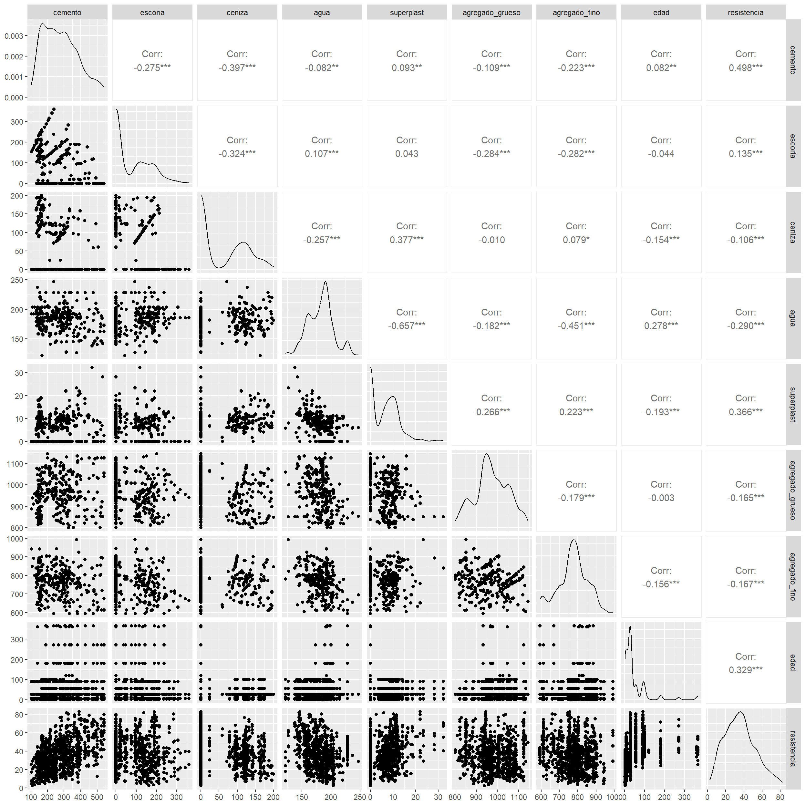
3.9.1 Hallazgos clave del análisis multivariado:
- Compensación de aglutinantes: Existen correlaciones negativas significativas entre el cemento y sus sustitutos: cemento vs ceniza (\(r = -0.397\)) y cemento vs escoria (\(r = -0.275\)). Esto refleja que en el diseño de mezclas, al incorporar ceniza volante o escoria se reduce proporcionalmente el cemento.
- Efecto reductor del superplastificante: Se observa una fuerte correlación negativa entre el agua y el superplastificante (\(r = -0.657\)), confirmando la eficacia de este aditivo químico para disminuir la demanda de agua.
- Comportamiento no lineal del curado: La relación entre la edad y la resistencia exhibe una desaceleración con el tiempo, sugiriendo una transformación funcional para capturar mejor su impacto.
3.10 Ingeniería de Características
A partir de los hallazgos multivariados y los fundamentos fisicoquímicos del concreto (Ley de Abrams y reacciones puzolánicas), creamos nuevas variables derivadas que fortalecen el análisis inferencial y los modelos predictivos:
df_fe <- df_clean |>
mutate(
# 1. Total de aglutinantes activos (kg/m^3)
total_cementante = cemento + escoria + ceniza,
# 2. Relación Agua/Cementante total (Ley de Abrams)
razon_agua_cementante = agua / total_cementante,
# 3. Transformación logarítmica de la edad de curado
log_edad = log(edad),
# 4. Porcentajes de sustitución relativa (%)
pct_ceniza = (ceniza / total_cementante) * 100,
pct_escoria = (escoria / total_cementante) * 100,
# 5. Factores categóricos binarios para pruebas de hipótesis
tiene_ceniza = factor(ifelse(ceniza > 0, "Con Ceniza", "Sin Ceniza"),
levels = c("Sin Ceniza", "Con Ceniza")),
tiene_escoria = factor(ifelse(escoria > 0, "Con Escoria", "Sin Escoria"),
levels = c("Sin Escoria", "Con Escoria")),
# 6. Factor ordinal por etapas estándar de curado
etapa_curado = factor(case_when(
edad <= 7 ~ "Temprano (<= 7d)",
edad > 7 & edad <= 28 ~ "Estándar (14-28d)",
edad > 28 ~ "Tardío (> 28d)"
), levels = c("Temprano (<= 7d)", "Estándar (14-28d)", "Tardío (> 28d)"))
)3.10.1 Correlación de las nuevas variables con la Resistencia
Comparamos la fuerza de asociación lineal de las nuevas variables con la variable respuesta:
df_fe %>%
select(resistencia, cemento, total_cementante, agua, razon_agua_cementante, edad, log_edad, pct_ceniza) %>%
cor() %>%
round(3) %>%
as.data.frame() %>%
select(Resistencia = resistencia)## Resistencia
## resistencia 1.000
## cemento 0.498
## total_cementante 0.613
## agua -0.290
## razon_agua_cementante -0.623
## edad 0.329
## log_edad 0.552
## pct_ceniza -0.163Como se aprecia, la razón agua/cementante (\(r = -0.623\)) y el total de cementante (\(r = +0.613\)) se consolidan como los predictores más potentes de la resistencia, mientras que \(\log(\text{edad})\) (\(r = +0.552\)) supera considerablemente a la edad en escala lineal (\(r = +0.329\)).